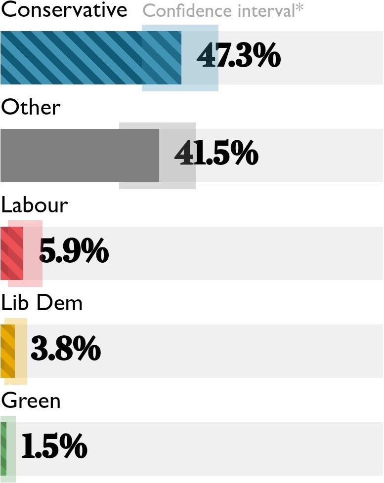
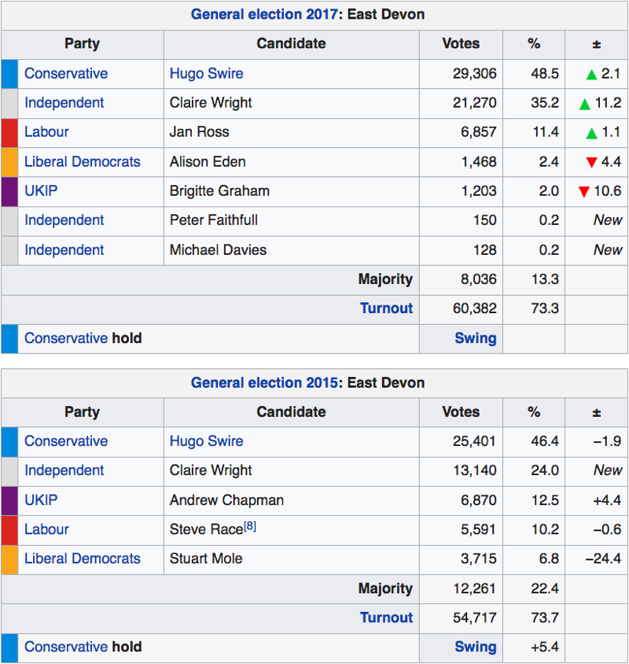
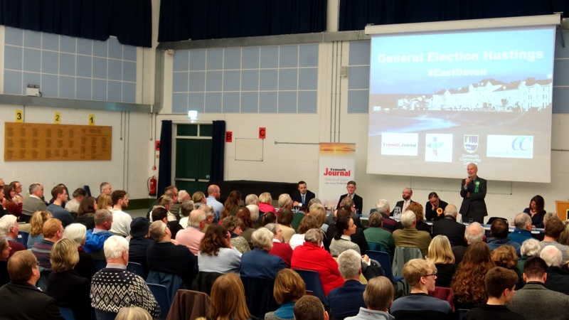
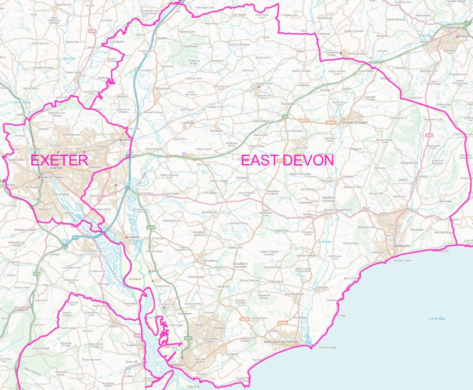
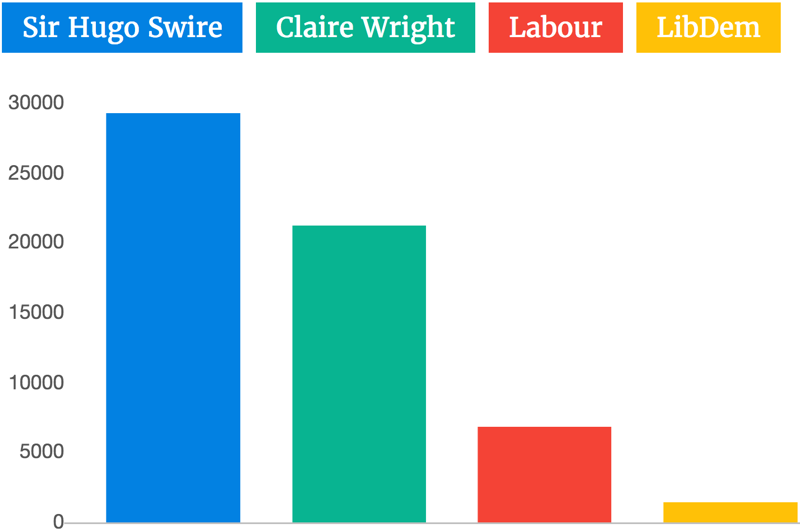

Political hacks have become more of a nuisance than ice cream-snaffling seagulls on Exmouth sea front in recent weeks as national media coverage of Claire Wright’s campaign to unseat the Tories in East Devon has increased by the day.
Reporters who hadn’t already realised East Devon would be a 2019 general election hotspot began to notice the game was afoot when incumbent Hugo Swire announced in September that he would not stand.
Then last week’s MRP YouGov poll found that Claire Wright was the most likely Independent to be elected in Britain, and pundits of every stripe woke up to the prospect of the first ever parliamentary victory for an independent candidate that has faced competition from all the main parties.
 Projected East Devon vote share in 2019 general election. Source: @timburley.
Claire Wright, who has never been a member of a political party, has been blazing a trail for independents since her election to Ottery St Mary Town Council in 2009.
Two years later she ousted the long-standing leader of East Devon District Council, then won the biggest majority on Devon County Council in 2013, and then again in 2017, with a thumping 75% vote share.
In her first parliamentary election in 2015 she won 24% of the votes cast from a standing start, then increased her share to more than 35% in 2017.
And since the surge of support for independents across the region in the May local elections, a new kind of politics has begun to look unstoppable in this part of the world. Independents won 31 seats in East Devon, up 18, to take control of the district from the Conservatives who had run the council for its entire 45 year history.
Claire Wright said: “I’ve always been an Independent. I’ve always been elected because of my hard work and the way I stand up for people, not because of the party I’m from.
“I’m a hard-working and effective councillor and will be a hard-working and effective MP. I’ve worked cross-party for the last ten years to achieve a range of things and I’d do exactly the same if I was in Parliament.
“It’s a complete myth that you need a party around you in the Commons. You don’t. It’s all about the person. The Green Party’s Caroline Lucas is probably one of the best known and effective MPs in the country.”
 East Devon election results in 2015 and 2017
With such strong support for independent politics in East Devon, and Hugo Swire’s withdrawal confirmed, the 7 November Unite to Remain tactical voting pact announcement came as a shock to many local observers. Instead of the LibDems and Greens standing down in the constituency to make way for the only candidate who is both pro-Remain and capable of beating the Conservatives, they would both contest the seat.
Since then a row has been brewing in the region around the role of national political parties in choosing whether to stand candidates when local party activists may have other preferences based on insights from grassroots campaigning in their constituencies.
Unlike neighbouring Exeter, where unambiguously pro-Remain Labour incumbent Ben Bradshaw’s 16,000 majority is unlikely to be overturned whoever stands against him, other Remain-supporting parties giving way to the strongest challenger to the incumbent Tory presents the best chance of sending a Remain-supporting East Devon MP to Westminster.
Indeed, on 11 November Unite to Remain’s director Peter Dunphy confirmed that the campaign had sought a deal to support Claire Wright in East Devon, but had been unable to persuade the Green Party or Liberal Democrat leadership that they should stand aside.
He said: “We were unable to gain Unite to Remain all-party agreement in East Devon where we had proposed Claire Wright as the clear challenger to the Conservatives.
“Our suggestion therefore is to support the Remain candidate with the best chance of victory, which in the case of East Devon is the Independent Claire Wright.”
All five pro-Remain tactical voting campaigns recommend supporting her too.
East Devon Independent Claire Wright
But LibDem candidate Eleanor Rylance is clear that her local party had no idea a Unite to Remain deal was being negotiated for East Devon and was never consulted over the proposals.
She said: “We were liaising with HQ for months and months and they assured us that East Devon was of no interest”.
Stuart Mole, the local party’s press officer, concurred: “At no time has it been proposed to local Liberals - by the Liberal Democrats, by Unite to Remain or indeed by Claire Wright - that the agreement should be extended to East Devon. Nor, to our knowledge, has the local Green Party been approached.”
However, a week passed after the Unite to Remain announcement during which other candidates could have chosen to withdraw from the ballot in support of Claire Wright.
Eleanor Rylance says she did not consider doing so, saying she did not know that Claire Wright was unambiguously pro-Remain or that she would vote to revoke Article 50 if faced with a no deal Brexit.
Eleanor Rylance speaking at hustings at Exmouth Community College
In fact Claire Wright’s campaign literature clearly states her position: “The government should offer the people a democratic say on the agreement by way of a confirmatory vote and I would campaign to remain. I would vote to revoke Article 50 if we were faced with the imminent danger of a no deal Brexit.”
Eleanor Rylance said: “All I have is her manifesto commitment which is that she’ll back remain in a referendum. We think it’s in the public interest for people to be able to vote to revoke Article 50. Our position is that if Claire is a good candidate then people will vote for her no matter what.”
Stuart Mole added: “It is important that all who wish to vote Lib Dem should have the chance to do so. Eleanor Rylance was unanimously reaffirmed as our candidate for parliament in East Devon last month and we have high hopes of her doing very well.”
However the party’s prospects in the constituency look poor. The previous candidate lost her deposit in the 2017 election, polling just 1,468 votes on a 4.4% swing against the party after the 24.4% swing it suffered in 2015 at the end of the coalition term.
When asked how she would react if Claire Wright fell short of winning by a margin equal to the votes cast for herself, thus handing victory to a Brexit-supporting Tory, Eleanor Rylance said: “This is going to be an extraordinarily complicated election and there are going to be lots of people switching sides.
“There’s absolutely no way of telling where votes will have come from.”
Henry Gent speaking at hustings at Exmouth Community College
East Devon Green Party was also kept in the dark about the prospect of a Unite to Remain deal in the constituency. Its candidate Henry Gent said it “was not consulted at all.”
However, he went on to say that he thought the local party “would not have expected to be consulted”, as the Unite to Remain agreement that emerged “does not include standing down against an Independent in any constituency”.
But members of the local party are aggrieved that they were not consulted over whether to stand a candidate, especially given the unique circumstances in East Devon.
Olly Davey, East Devon Green Party co-ordinator, acknowledged that the party had received complaints from members about the decision.
He said: “We have had a number of responses expressing the view that we should not be standing against Claire Wright.
“We did not ballot members [to ask whether a general election candidate should stand] though this was discussed at length by the committee and other members.”
When asked how many had complained, he said: “I have not kept a list, but I think it is about a dozen.”
Local member Mark Gold said: “I’ve been a Green Party member for many years, but there’s no doubt that we should not be fielding a candidate to oppose Claire Wright in the election.
“All the national newspapers seems to agree that she has a real chance of winning and considering her support for environmental protection and her great record in helping local people as a councillor, we should all be voting for her.
“Indeed, that’s exactly what all the Green Party members I know will be doing on December 12th. And given that, I find it hard to understand how the awful decision to field a candidate was reached.”
St Loyes and Topsham have been in the East Devon constituency since 2010 boundary changes.
Contains OS data © Crown copyright and database right 2019.
Emily McIvor, who was co-ordinator of East Devon Green Party from 2013 to 2015, said: “Members were not asked whether East Devon Green Party should field a candidate despite East Devon being such a special case.
“Internal party democracy is a core value for Greens, and members who feel a candidate has been imposed upon them have good reason to feel let down.”
Olly Davey confirmed that the Green Party constitution confers autonomy on local parties, within party rules, but added: “There is no requirement on local parties to ballot their members on whether to stand in elections.”
He said: “All the communications we were receiving from the Green Party were urging us to get on with selecting our candidates so that if an election was called, we had candidates in place”, adding “even if it were subsequently decided to stand aside.”
However he later said that he and the local returning officer, Pete Duke, had also been advised by the party that “it would be a breach of party rules to ballot members on standing once we had started the selection process.”
Sue Nicholson, who was a Green Party district councillor in Stroud for eight years after becoming the UK’s first female Green councillor in 1988, moved to East Devon 18 months ago.
She said: “When I heard the Greens were going to stand somebody here I was horrified. I’m really sorry and disappointed we’re standing a candidate here because I don’t think it’s appropriate in the circumstances.
“I would have preferred the members to have been balloted on whether we should stand a candidate or not, which didn’t happen.”
Claire Wright speaking at hustings at Exmouth Community College
Local members have also criticised the way East Devon Green Party selected Henry Gent as its candidate, although co-ordinator Olly Davey claims no-one has complained to him about the selection method.
Voting invitations were sent out using SurveyMonkey, which he acknowledged “is not totally secure”, instead of Opavote, a specialist online voting platform which a South West Green Party elections official advised him “would have been a better system to use”.
In the voting invitation email Olly Davey acknowledged that he had mistakenly sent a previous poll link, which had since closed, to “many more people than intended”.
However, the replacement poll link was nevertheless sent not only to party members who live in East Devon, but also to those who live in the neighbouring Tiverton and Honiton constituency, alongside a request to the latter group not to vote.
As a consequence, Olly Davey admitted that the party could not be absolutely certain that no non-members voted in the candidate selection process.
However, he added: “I have no reason to believe that any non-East Devon Green Party members voted, and I would trust our members not to indulge in practices they know are fraudulent.
“There was only one candidate for selection, plus the option of re-open nominations, and I would be more suspicious if we had received a deluge of votes for the latter option, or indeed for the candidate. 45 members voted to select Henry, with 5 voting to re-open nominations.”
Sharon Howe, a local member who helped restart East Devon Green Party in 2010 after a hiatus, said: “There should have been a vote on whether someone should stand at all, rather than only being asked whether we wanted to vote for Henry Gent. The members should have been canvassed first but we weren’t asked.
“I’m unhappy about that, and I’m unhappy that the SurveyMonkey poll was not secure and could have resulted in fraudulent voting. The situation made me very angry.
“I wrote to Olly Davey about it, and had the impression that a lot of other people complained as I did, but he just tried to defend the decision and didn’t really take my arguments on board.
“It seemed like the decision had been made higher up in the party. I got the feeling the local party was putting up a wall against the objections.”
 Hustings at Exmouth Community College
Henry Gent also defended the process that led to his selection as party candidate. He said: “The regional party confirmed that our selection process was sufficiently rigorous. We held a well-publicised open meeting for all members as a hustings prior to the vote. The vote was overwhelmingly in my favour. There is no evidence that any non-members managed to vote.”
He also said that the Green Party should be on the ballot paper so people can give the clearest possible indication of where they stand on the climate emergency.
Somewhat surprisingly, given that he is standing against her, he added that he would be delighted if Claire Wright were to win.
Emily McIvor said: “Every East Devon Green Party member I’ve spoken with shares that view, which is hardly surprising given that Claire has always championed green causes and actively opposed cuts to vital local services.
“Green voters across the UK in every other constituency can vote with pride, knowing they’re backing urgent action to address climate change and oppose Brexit. But East Devon is different.”
 Exeter and East Devon constituency boundaries.
Contains OS data © Crown copyright and database right 2019.
Indeed, as with the Liberal Democrats, the Green Party’s prospects look poor in the constituency. In 2010 its candidate received just 815 votes, losing the party’s deposit. No candidate came forward to stand against Claire Wright in 2015 or 2017, with some local members already choosing to vote tactically in her support.
And if the 2017 turnout were to be repeated this year, Henry Gent would need to receive at least 3020 votes to avoid losing the deposit again.
When asked how he would react if Claire Wright fell short of winning by a margin equal to the votes cast for himself, he said: “In the event that there is a majority government for either Boris Johnson or Jeremy Corbyn the result for East Devon will not make any difference.”
“In the event of a minority government, I hope that the next general election is not far away.”
“So, in the very unlikely event that Claire Wright loses by that margin, my reaction will be phlegmatic.”
“On balance, the result might do some good in forcing a genuine progressive alliance in East Devon involving all the progressive parties rather than just expecting the Greens to unilaterally stand down.”
Claire Wright speaking at a rally in Exeter
Other local party members were more positive about the potential of tactical voting in the constituency at this election.
Sue Nicholson said: “I was a member of the Ecology Party before the Green Party, and have campaigned for the Greens and voted Green at every opportunity I have had throughout my life.
“I’ve never voted tactically before, but on this particular occasion I’m going to vote tactically for Claire Wright.
“It was a tough decision to make because this is a complete departure for me, but it was just so important for me to do everything we can to avoid getting a Tory MP here in East Devon.
“This election is not like any other. The Tories will do so much damage to our economy, to the environment, to the social fabric of our society.
“In future elections, certainly in local elections, I will almost certainly vote Green: it is the habit of a lifetime.
“However I can wholeheartedly support Claire Wright now because she’s an Independent with established green credentials and policies, and because voting tactically for the LibDems or Labour in East Devon is not an option as neither have a hope of ousting the Tories here.
“If Claire Wright were elected she would be able to work very well with Caroline Lucas, who will hopefully get in again, and any other Green MPs that might be elected.
“On this occasion, in this constituency, at this election, the best vote for a Green Party supporter like me is a vote for Claire Wright.”
 2017 East Devon general election results
Indeed, local activists from both LibDem and Green camps are choosing to campaign for Claire Wright instead of their own party candidates.
Claire Wright said: “I have never asked for any favours from my rivals and I respect their decision to stand and fight for the seat.
“Of course, running as a sole candidate against the Conservatives would appear to give me a better chance but I am not asking anyone for an easy ride.
“I have fought a fair and positive campaign twice, increasing my share of the vote. I would now urge my supporters to concentrate all of their energy on getting this people-powered campaign over the line.”
And it looks like the Tories are worried, with both Boris Johnson and Matt Hancock visiting the constituency in recent weeks, and the party distributing a fake newspaper called East Devon Future in what Claire Wright called “a clear attempt to deceive voters.”
At the same time, their candidate Simon Jupp has pulled out of an election hustings due to take place in Sidmouth on Friday.
Meanwhile, persons unknown have set fire to election placards supporting Claire Wright in front of her parents’ home, and have ripped down boards elsewhere.
The arsonists left a nearby board supporting the Conservatives untouched.
A full list of candidates standing in the constituency is available via Democratic Dashboard.